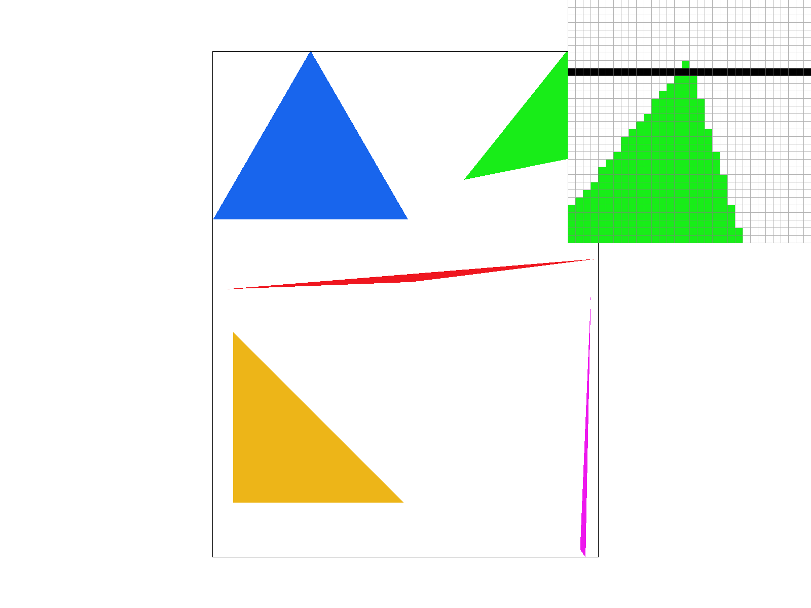
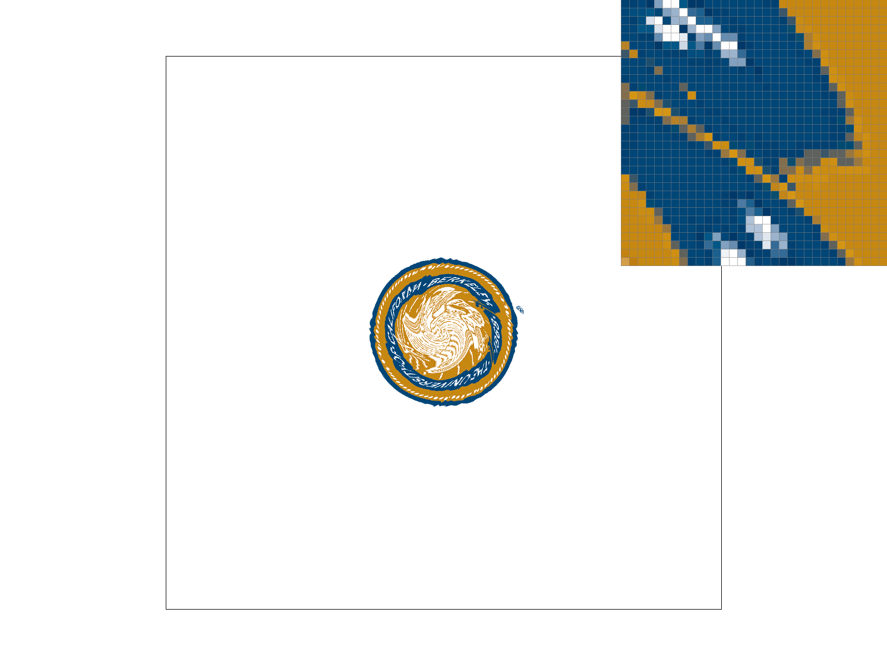
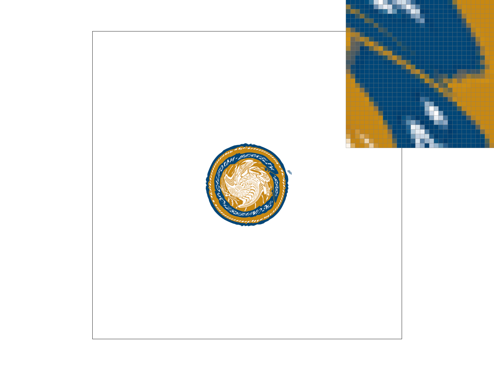
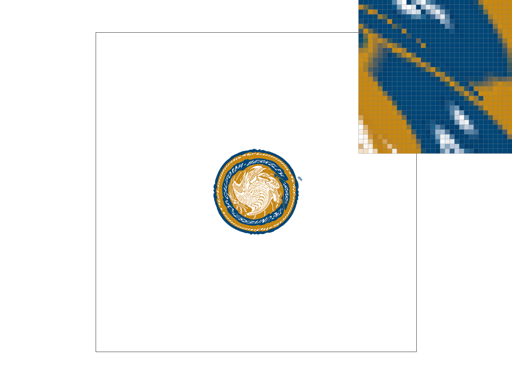
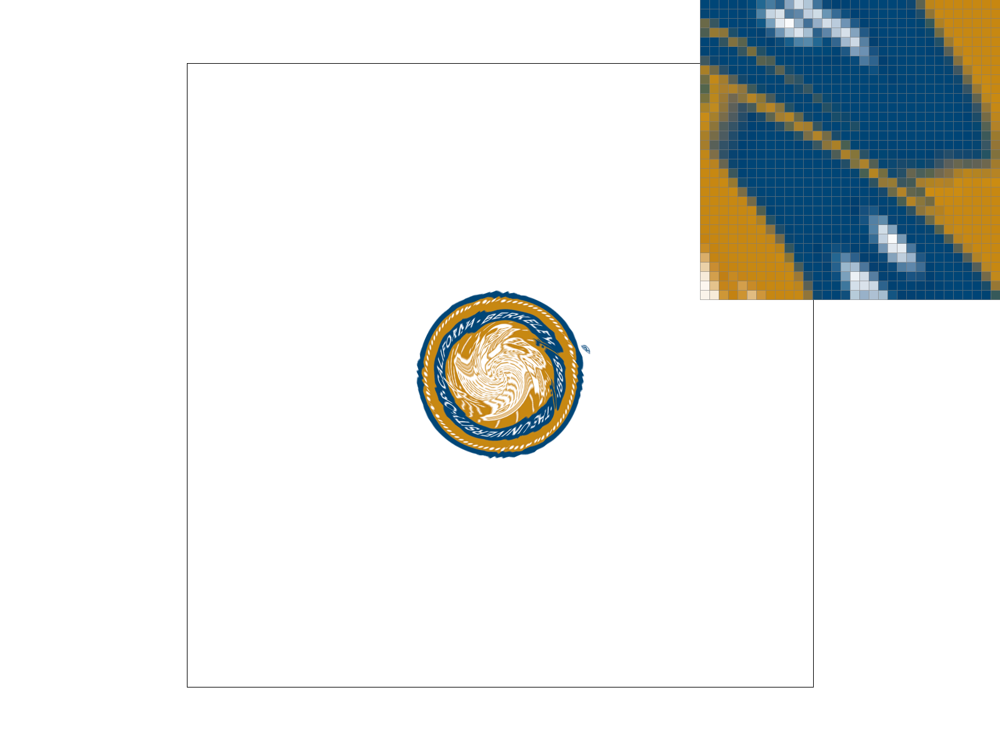
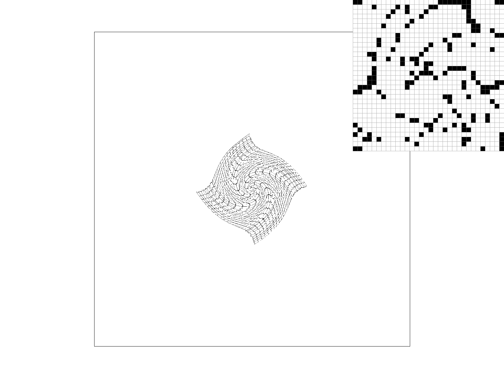
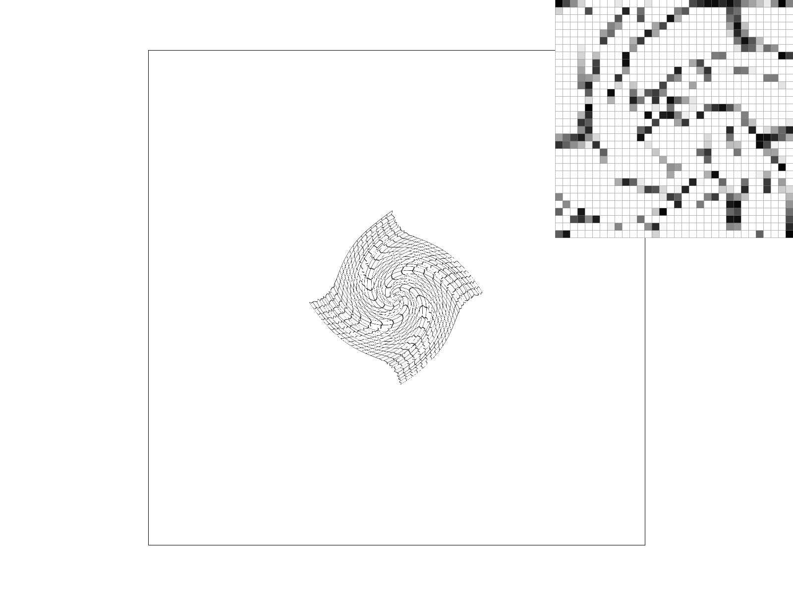
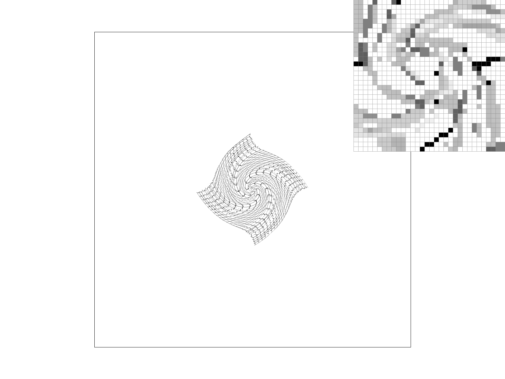
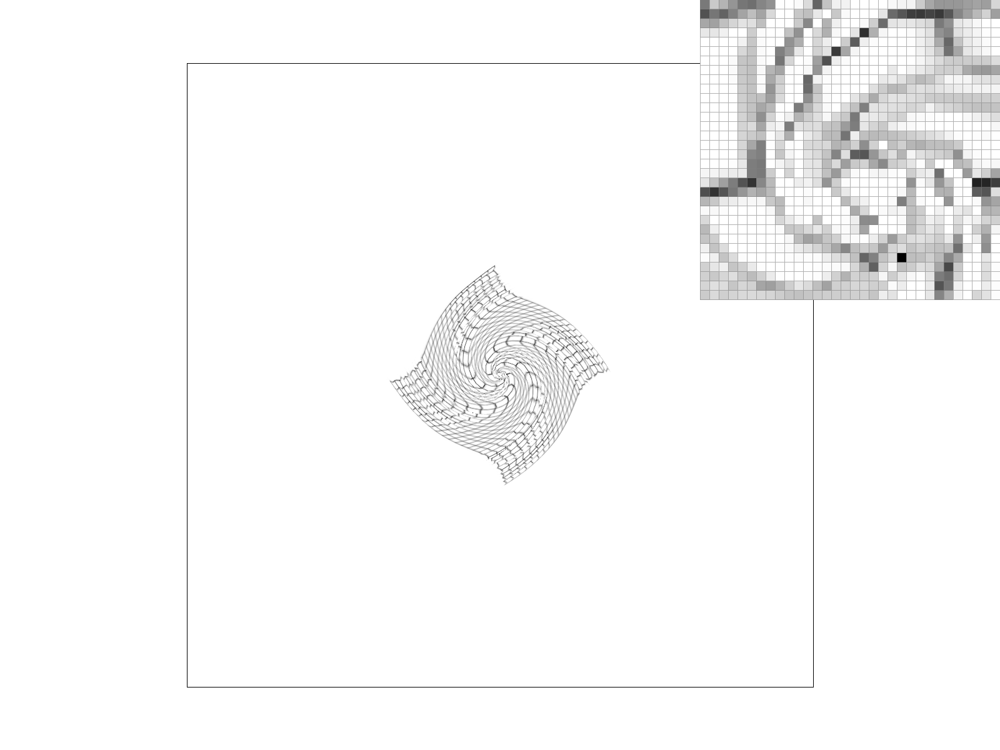

CS184/284A Spring 2025 Homework 1 Write-Up
Names:
Link to webpage: (TODO) cs184.eecs.berkeley.edu/sp25
Link to GitHub repository: (TODO) cs184.eecs.berkeley.edu/sp25

Overview
For this homework I built a mini rasterizer end‑to‑end: triangle coverage, supersampling antialiasing, color interpolation, texture sampling, and mipmapping. The most interesting part was seeing how small math choices (sample location, edge tests, UV derivatives) immediately show up in image quality. Putting all of the pieces together felt like assembling a tiny graphics pipeline from scratch.Task 1: Drawing Single-Color Triangles
I compute the axis‑aligned bounding box of each triangle, clamp it to the framebuffer, and only iterate over pixels inside that box. For each pixel, I test the sample at the pixel center (x + 0.5, y + 0.5) using edge‑function/barycentric checks. If the point is inside or on an edge, I fill the pixel. This works regardless of vertex winding order.This algorithm is no worse than checking every sample in the bounding box, because it only iterates over that box and skips everything outside it.
Here is an example 2x2 gridlike structure using an HTML table. Each tr is a row and each td is a column in that row. You might find this useful for framing and showing your result images in an organized fashion.

|

|
|
|

|
Task 2: Antialiasing by Supersampling
I implemented supersampling by storing multiple sub‑pixel samples per pixel in a supersample buffer. During rasterization, I test each sub‑pixel sample and write into the buffer. In resolve, I average the samples back into a single framebuffer color.Supersampling helps because it captures partial coverage within a pixel. Thin edges and skinny triangles stop “snapping” to single pixels, so aliasing and jaggies are reduced. The improvements are very clear at 4× and 16×.
Task 3: Transforms
I modified the cubeman to make him wave by rotating and bending his right arm while keeping the rest of the body stable. The goal was a clean, readable gesture without changing proportions too much.Task 4: Barycentric coordinates
Barycentric coordinates represent any point inside a triangle as a weighted blend of the three vertices, where the weights sum to 1. This makes them perfect for smooth color interpolation and texture mapping across a triangle.Task 5: "Pixel sampling" for texture mapping
Pixel sampling determines how we fetch a texel for a given UV coordinate. Nearest picks the closest texel, while bilinear blends the surrounding four texels. Nearest is sharper but blockier; bilinear is smoother, especially at oblique angles or minification. Supersampling helps both, but bilinear still looks cleaner overall.|

|

|
|

|

|
Task 6: "Level Sampling" with mipmaps for texture mapping
Level sampling chooses which mipmap level to use based on the pixel’s footprint in texture space. L_ZERO always uses level 0, while L_NEAREST chooses the closest mip level. Mipmaps reduce aliasing when textures are minified and generally improve temporal stability, but they cost extra memory. P_NEAREST vs P_LINEAR still controls how texels are filtered within the chosen mip level.|

|

|
|

|

|
(Optional) Task 7: Extra Credit - Draw Something Creative!
If you include this section, add your competition SVG screenshot(s) here and describe the concept + implementation.Additional Notes (please remove)
- You can also add code if you'd like as so:
code code code - If you'd like to add math equations,
- You can write inline equations like so: \( a^2 + b^2 = c^2 \)
- You can write display equations like so: \[ a^2 + b^2 = c^2 \]